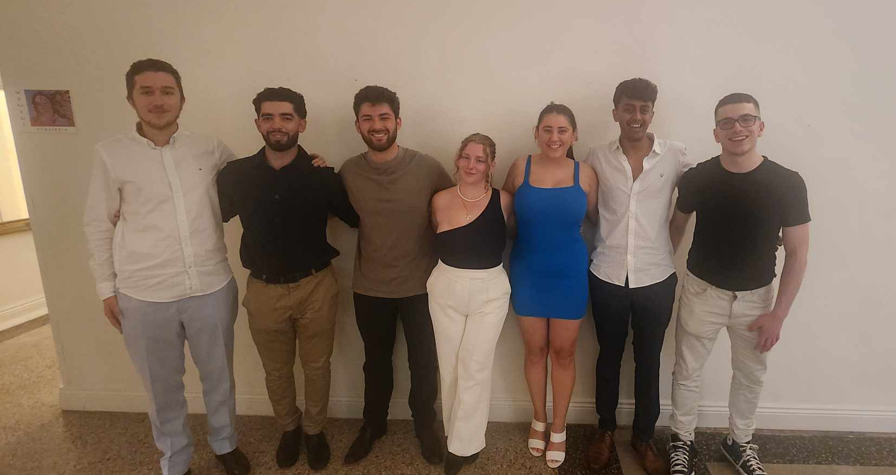

I'm the Treasurer of my university's Greek club, which might seem like an unexpected role for someone who isn't Greek themselves. But I've always been drawn to learning about different cultures, and the Greek community at my uni has been incredibly welcoming. I've had the chance to get involved and learn more about the culture, and now I'm part of the executive committee. It's a great way for me to contribute and be a part of something that's all about sharing and celebrating Greek heritage.

I've always been passionate about maths, and I believe that anyone can
get into it with the right guidance. That's why I volunteered as a maths
mentor with the
In2Science program in 2021 and 2022. I worked with grade 10
students, helping them understand maths concepts and giving them a
glimpse into what it's like to study STEM at university.
I think a lot of people get turned off maths because they see it as a
"subject of numbers," but I think that's a shame. When you start to see
maths as a "language of logic," it becomes a lot more interesting. I've
tried to pass on that perspective to my students, and it's been great to
see them start to enjoy maths more. It was also a nice bonus to be
nominated for Best Mentor in 2021 and to be a finalist for Best
Communicator in 2022.
Starting uni during COVID was a bit of a bummer, especially since first
year is usually the time when you're supposed to be meeting new people
and having a good time. But with online classes and not much
socialising, I didn't want to waste the opportunity. So, I decided to
start a new uni club called Sweebs, which was focused on Asian
entertainment, including Japanese and Korean comics, cartoons, J-pop,
and K-pop.
But as I got started, I realised that the club could be more than just a
niche interest group. I figured that all uni students were probably
looking for ways to connect with each other, even if we were stuck
online. So, I shifted the focus to creating a social space for students
to hang out and network.
It ended up working really well, and we grew to over 400 members in just
a few months. It was one of the biggest uni clubs at the time, and it
was great to see people from all over the uni coming together. I also
started an "all committee community" to help different clubs collaborate
on events. It was a pretty simple idea, but it ended up being a big hit
- we had reps from over 20 clubs getting involved and working together.
In my final year of high school, I took part in a volunteer program that
involved traveling to underprivileged areas in India. We were there to
help raise awareness about eye health and provide free eye tests and
glasses to people who needed them. Before we started, we were trained by
professionals on how to conduct eye tests, which was a really valuable
experience.
It was eye-opening to see how many people were struggling with blurry
vision, not realising that it was a treatable condition. We were able to
make a real difference by providing free eye tests and glasses to those
who needed them. It was a really rewarding experience, and it's
something that's stuck with me.
The program was a huge success, attracting a lot of local attention and
media coverage. Local news agencies even came to cover our efforts, and
I was fortunate enough to be featured in one of the articles. Below is a
section from the local newspaper that highlights our experience.